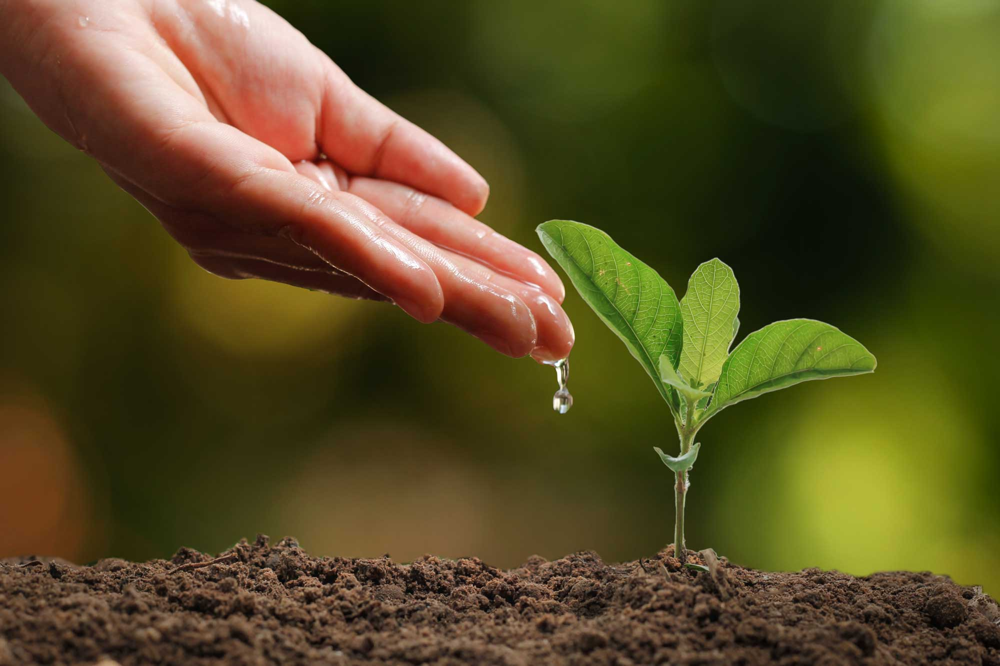

Grenergy Editorial Research
Published January 1, 2024
Conserving water is not only important to the environment but also ourselves with which we use to sustain our life and preserve our health.
Around 4 trillion cubic meters of water is consumed globally every year. That's a LOT of water and validly so as there are over 8 billion humans living on this Earth. However, the way we use this water isn't always to hydrate us. According to the EPA, 20 percent of the water we use goes to leaks and other uses. It’s imperative that we know how we use our water and what we can do to limit/decrease the amount of water we use daily. Here are 3 simple tips to conserve water and save our planet.
Something that is heard quite commonly is that if you have leaky water sources like a tap, hose, or shower, PLEASE get it fixed. It was found that about 10,000 gallons of water are wasted annually due to leaks in water sources.
Close taps and water sources when not in use. This means turning off the faucet in the middle of brushing your teeth. Even better yet, just use a cup of water for your oral needs. Try to take shorter showers.
Another thing to consider doing is doing the laundry/ dishwasher at max capacity. This way, you won’t be using a large amount of water on a small amount of dishes and instead wait and fill it up. You’ll get more things cleaned faster.